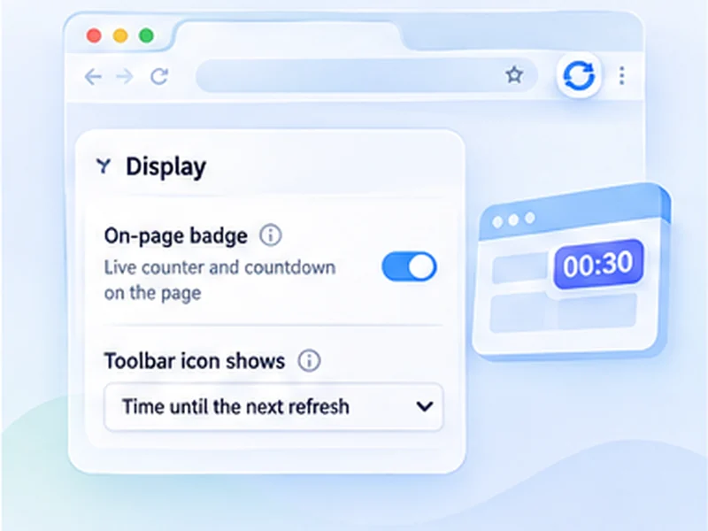

See every refresh coming.
A small pill sits in the corner of the page with the refresh count, the time left, and pause and stop buttons. Drag it wherever you like.

How live countdown works
A small pill sits in the corner of the page with the refresh count, the time left, and pause and stop buttons. Drag it wherever you like.
Turn the on-page badge off and keep only the toolbar number. Refreshing carries on exactly the same.
Quick setup
Start a refresh as usual.
Drag the counter to a corner that suits you; the position is remembered.
Use its pause and stop buttons, or hide it with the On-page badge switch.
A refresh counter and countdown on the page
Once a refresh is running, a small pill appears in the corner of the page. It shows how many times the page has reloaded, the seconds left until the next one, and a thin progress bar.
You can pause, resume or stop from the pill itself, without opening the popup.
Put it where it suits you
Drag the counter anywhere on the page and it stays there after the next reload. It is drawn separately from the website, so it looks the same on every site and cannot be broken by the page's own styling.
What the colours mean
Green and pulsing: running. Amber: paused. Purple: finished on a limit. Red: a watch rule matched.
Or use the toolbar icon instead
Prefer nothing on the page? Switch the on-page badge off. The extension icon can then show the refresh count, a countdown to the next refresh, or nothing. Pick whichever you like under Display.
A worked example
Start a 60-second refresh on a status page. A dark pill appears bottom right: a green dot, the number 1 with the word refreshes, and 59.4s counting down above a thin bar that fills as the reload approaches. Drag it to the top left so it does not cover the page's own chat button. It will be there, in that spot, after every reload.
Refresh countdown in the toolbar
Under Display, Toolbar icon shows has three choices. Number of refreshes is the default. Time until the next refresh turns the icon's badge into a countdown, showing seconds, then minutes for longer waits. Nothing keeps the icon clean.
The toolbar badge is per tab, so each tab shows its own count or countdown when you switch to it.
Common questions about the counter
It covers something I need to click
Drag it elsewhere, or switch it off and use the toolbar countdown.
It shows Waiting, you are typing
Smart pause has delayed the refresh because you typed recently. It retries every few seconds.
It says Countdown restarted
You clicked or scrolled with that pause option on, and the wait began again.
Works with every other feature
The counter reflects whatever is happening: checking the page for a watch rule, paused, finished on a limit, or stopped on a match. It is the quickest way to see the state of a tab at a glance.
At a glance
- Always visible. No need to open the popup to check progress. The count and countdown update live.
- Never breaks the page. The counter is isolated from the site's own styles and scripts, so it looks the same everywhere.
- Toolbar countdown too. The extension icon can show the refresh count, the seconds until the next refresh, or nothing at all.
Questions, answered.
How do I hide the counter?
Open Advanced settings, Display, and switch off On-page badge.
Can I see the countdown without opening the popup?
Yes, on the page counter, or on the toolbar icon if you choose Time until the next refresh.
Does the counter slow the page down?
No. It is a few small elements updated ten times a second, and only while the tab is visible.
Why did the counter disappear?
Refreshing was stopped, the badge was switched off, or the extension was updated. Press Start again.
Does it show on every website?
On any page where the extension can run. Browser pages and extension stores are excluded.
Can I move the counter?
Yes, drag it anywhere. It stays there on the next refresh.
Does the counter appear in screenshots of the page?
Yes, it is part of the page view. Switch it off first if you need a clean capture.
Try it on your next open tab.
Free for Chrome and Firefox, with no account required.
Not seeing the feature you need?
Share the browser task you would like to make easier. Your idea helps guide what gets built next.